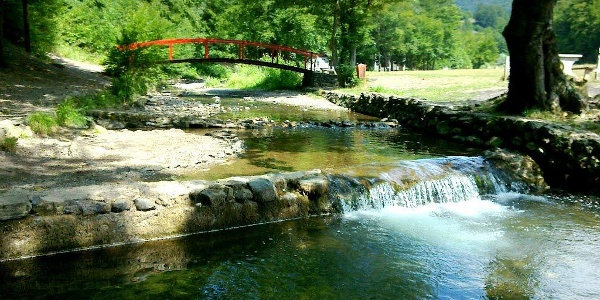

Bistricak

Bistričak; A mountain resort north of Zenica at the confluence of the Ograjina and Šerićka rivers, which form the
river Bistričak, below the steep slopes of the Velja mountain massif (1125 m / m). The name most probably comes
from the name of the river Bistričak, which was named after the village of Bistrica, which is located in a hilly
and mountainous area, near the confluence with Bosnia.
The Austro-Hungarian occupation brought progress to the rural area of Dogloda, where Bistričak is located.
Around 1922, a mountain lodge was built, owned by the "Friend of Nature" society. Before World War II, the home
was turned into a hotel. It burned down during World War II. After II S.R. the Ironworks decided to build a resort
. The workers of the Ironworks were on the construction of the resort. The ground floor was built of stone, and
the two floors were made of mountain-style logs. The grand opening was in the summer of 1949. Unfortunately, the
home burned down in 1950. It was renovated in 1952. and later reconstructed and extended several times. At the
beginning of the eighties, a 400 m annex was built. upstream along Šerićka Rijeka. Apart from the Ironworks, rest
homes in Bistričak were built by TP "Progres" and scouts from Zenica. Bistricak today is grat piece of nature where
people from Zenica come to relax. There are football, basketball and volleyball courts for sports activities.
It is also great place to go for a walk. Clean air and beautiful nature is why bistricak is so important to Zenica.